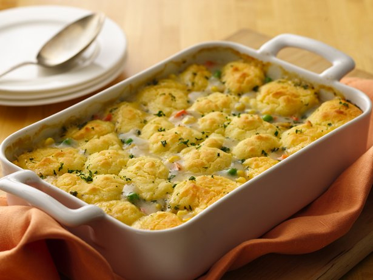

Gluten Free Hearty Chicken Pot Pie

Dinner ready in 45 minutes! Enjoy this scrumptious chicken pot pie packed with veggies and herbs – a hearty casserole!
Ingredients
- 2 tablespoons butter or margarine
- 1 medium onion, chopped
- 1 bag (12 oz) Green Giant® Valley Fresh Steamers™ frozen mixed vegetables
- 1 1/2 cups cut-up cooked chicken
- 1 3/4 cups Progresso® chicken broth
- 1 teaspoon seasoned salt
- 1/2 teaspoon dried thyme
- 3/4 cup milk
- 3 tablespoons cornstarch
Topping
- 3/4 cup Bisquick® Gluten Free mix
- 1/2 cup milk
- 1 egg
- 2 tablespoons melted butter or margarine
- 1 tablespoon chopped fresh parsley
Steps
- Heat oven to 350ºF. In 3-quart saucepan, melt butter over medium heat. Add onion; cook, stirring frequently, until tender. Stir in vegetables, chicken, chicken broth, salt and thyme; heat to boiling. In small bowl, mix 3/4 cup milk and the cornstarch with wire whisk until smooth; stir into chicken mixture. Heat just to boiling. Pour into ungreased 2-quart casserole.
- In small bowl, stir all topping ingredients except parsley with fork until blended. Drop topping mixture by small spoonfuls over chicken mixture. Sprinkle with parsley.
- Bake 25 to 30 minutes or until toothpick inserted in center of topping comes out clean.